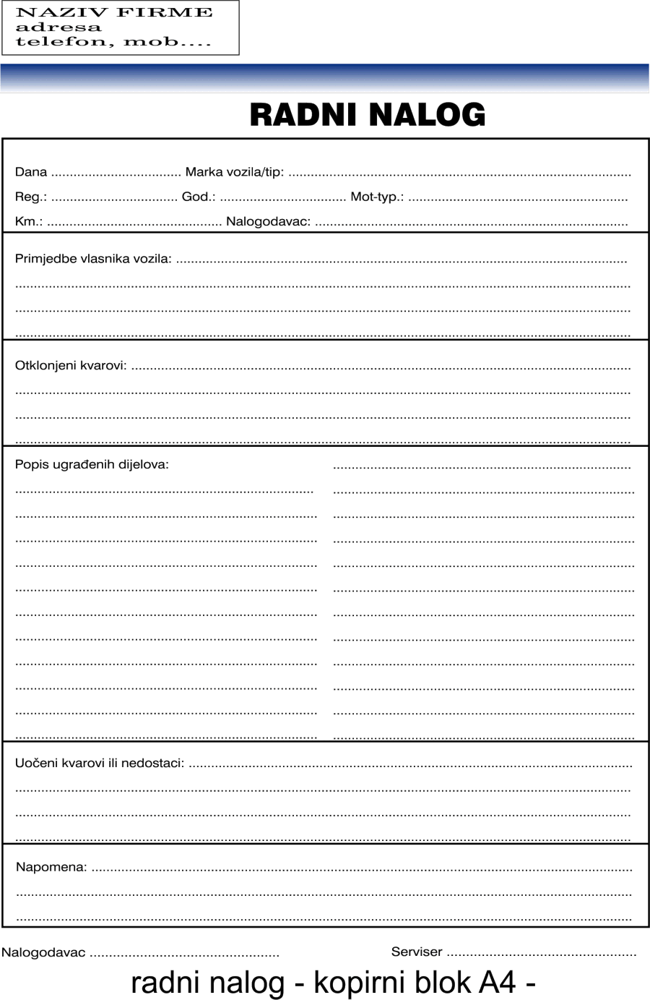

Postanite dio tima i na jednostavan način upravljajte vašim poslovanjem
WorkOrder CMS
WorkOrder Content Managment System(CMS) je razvijen za upravljanje i otpremanje radnih naloga. CMS pomaže dodavanju radnih naloga i uređivanju. Po završetku se generira račun u PDF formatu. Moguće je pohraniti velik broj podataka, koji Vam na jednostavan način omogućavaju pregled i dodavanje naloga. Jednostavno sučelje i korištenje samo su dio razloga zbog kojeg se trebate prijaviti i što prije olakšati vaše poslovanje.
Primjer popunjava papirnog radnog naloga:
Radni nalog se izdaje u obliku dokumenta, te služi praćenju radova koje obavlja pojedina osoba ili organizacijska jedinica poslovnog subjekta. Na radnom nalogu nalaze se sve stavke koje su potrebne kako bi djelatnici, kojima se izdaje radni nalog, bili u potpunosti informirani s radovima koji ih očekuju na terenu.